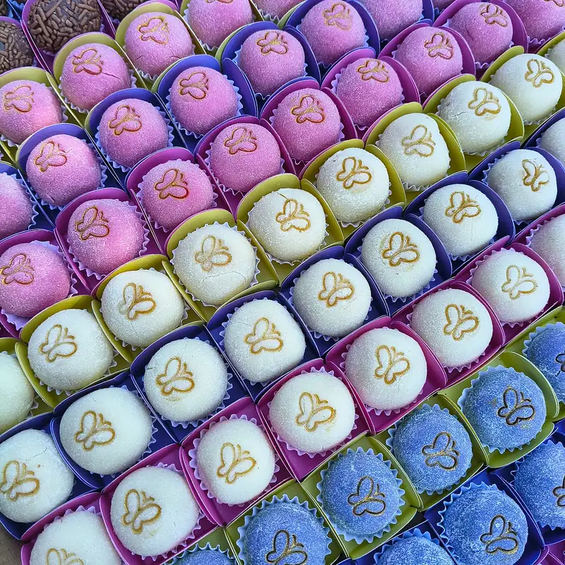
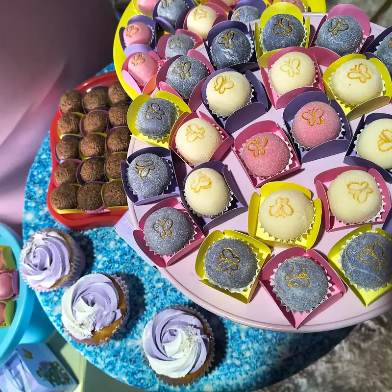
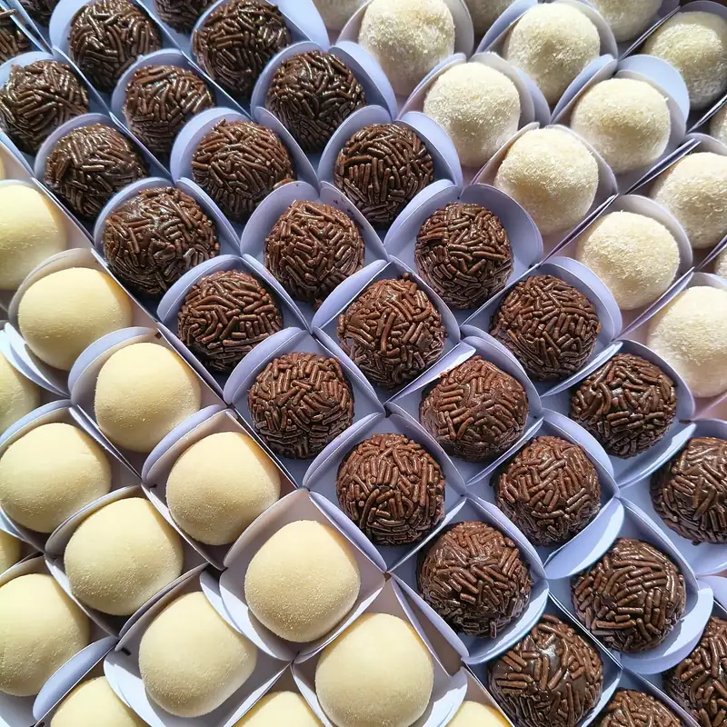
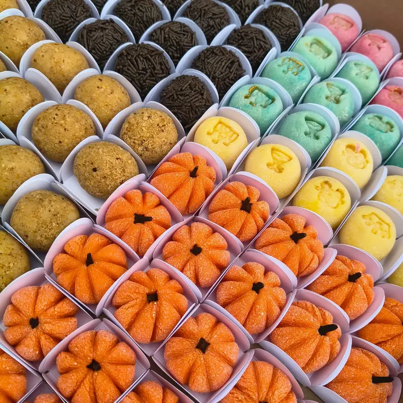
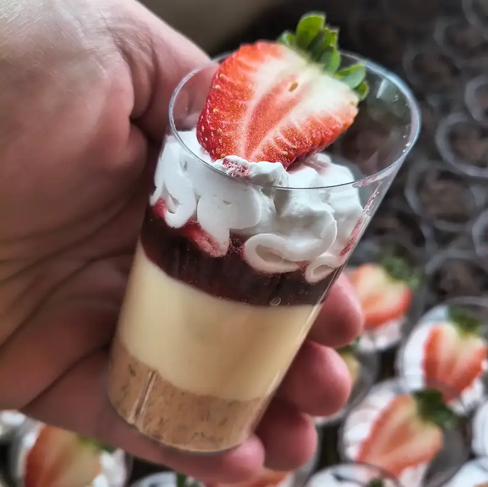
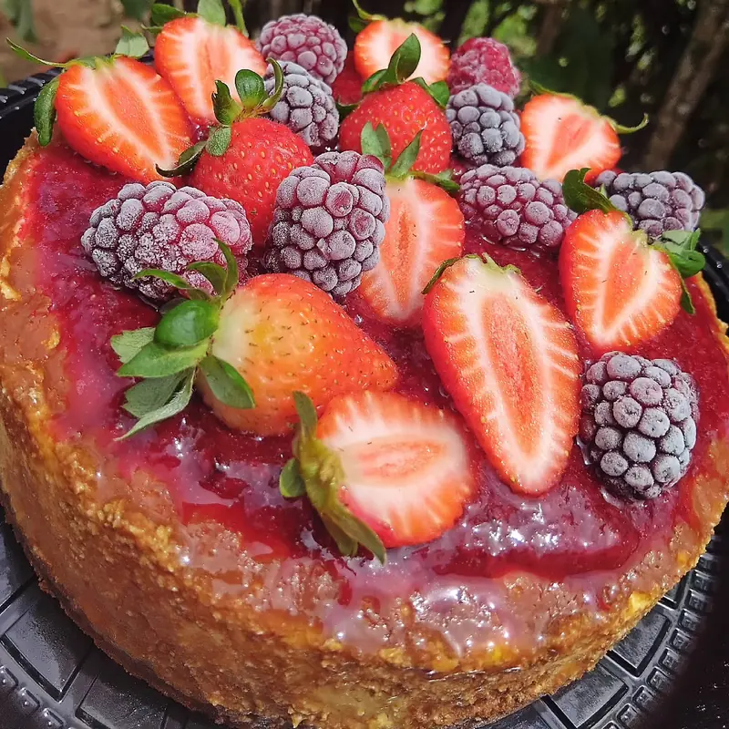

Kit festas e doces
Doces tradicionais e personalizados, para a mesa da festa e para acompanhar o bolo.
Pedir orçamento do kit festa





Doces tradicionais e personalizados, para a mesa da festa e para acompanhar o bolo.
Pedir orçamento do kit festa




